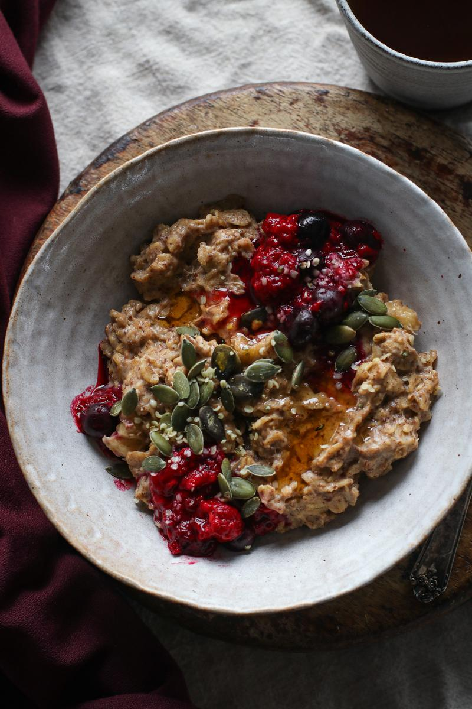

Oatmeal Recipe

Description
This recipe is everything a cozy bowl of oatmeal should be. It's creamy, wholesome, warm, and filling.
Ingredients
Oats
- 1 cup Old-Fashioned Rolled Oats
- 2 cups Unsweetened Soy Milk
- 3/4 tsp Ground Cinnamon
- 1/8 tsp Pumpkin Pie Spice
- 2 Bananas (sliced)
- 2 tbsp Ground Flaxseeds
- 1/2 tsp Pure Vanilla Extract
Toppings
- 1/2 cup Stewed Berries
- 2 tbsp Peanut Butter
- 2 tbsp Raw Pumpkin Seeds
- 1 tbsp Hemp Seeds
Steps
- To a medium pot on high heat, add the oats, milk, cinnamon, pumpkin pie spice and one of the bananas.
- Bring the pot to a gentle boil, then reduce to a simmer for 5 minutes, stirring on occasion to prevent burning.
- Add the other banana and flaxseeds, cooking for another 2-5 minutes.
- Add more milk if you prefer a thinner consistency, or cook for a couple minutes longer if you prefer it thicker.
- In the end, stir in the vanilla extract and remove the pot from the heat. Add toppings and enjoy!